Data Structures and Algorithms
with Object-Oriented Design Patterns in Java
Data Structures and Algorithms
with Object-Oriented Design Patterns in JavaRemoving items from a scatter table using open addressing has to be done with some care. The naïve approach would be to locate the item to be removed and then change the state of its location to empty. However, that approach does not work! Recall that the findMatch method which is used to locate an item stops its search when it encounters an empty cell. Therefore, if we change the state of a cell in the middle of a cluster to empty, all subsequent searches in that cluster will stop at the empty cell. As a result, subsequent searches for an object may fail even when the target is still in the table!
One way to deal with this is to make use of the third state, deleted. Instead of marking a location empty, we mark it deleted when an item is deleted. Recall that that the findMatch method was written in such a way that it continues past deleted cells in its search. Also, the findUnoccupied method was written to stop its search when it encounters either an empty or a deleted location. Consequently, the positions marked deleted are available for reuse when insertion is done.
Program  gives the implementation of the withdraw.
The withdraw method takes a Comparable object
and removes that object from the scatter table.
It does so by first locating the specific object instance
using findInstance and then marking the location deleted.
The implementation of findInstance has been elided.
It is simply a trivial variation of the findMatch method.
gives the implementation of the withdraw.
The withdraw method takes a Comparable object
and removes that object from the scatter table.
It does so by first locating the specific object instance
using findInstance and then marking the location deleted.
The implementation of findInstance has been elided.
It is simply a trivial variation of the findMatch method.
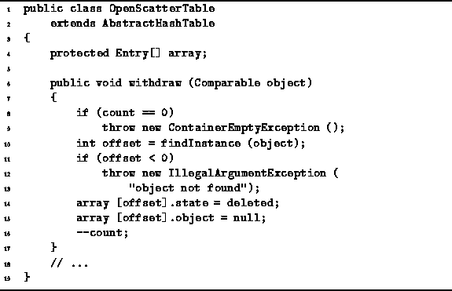
Program: OpenScatterTable Class withdraw method.
The running time of the withdraw method is determined by that of findInstance. In the worst case findInstance has to examine every array position. Therefore, the running time of withdraw is 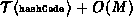.
There is a very serious problem with the technique of marking locations as deleted. After a large number of insertions and deletions have been done, it is very likely that there are no cells left that are marked empty. This is because, nowhere in any of the methods (except purge) is a cell ever marked empty! This has the very unfortunate consequence that an unsuccessful search, i.e., a search for an object which is not in the scatter table, is 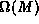. Recall that findMatch examines at most M array locations and only stops its search early when an empty location is encountered. Since there are no more empty locations, the search must examine all M locations.
If we are using the scatter table in an application in which
we know a priori that no items will be removed,
or perhaps only a very small number of items will be removed,
then the withdraw method given in Program
will suffice.
However, if the application is such that a significant number of
withdrawals will be made,
a better implementation is required.
Ideally, when removing an item the scatter table ends up
exactly as it would have appeared
had that item never been inserted in the first place.
Note that exactly the same constraint is met by the withdraw
method for the ChainedScatterTable class given
in Program .
It turns out that a variation of that algorithm can be
used to implement the withdraw method
for the OpenScatterTable class
as shown in Program .
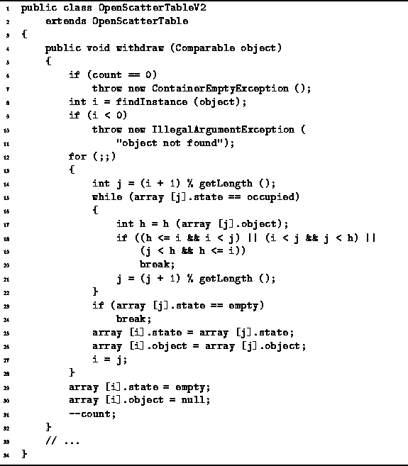
Program: OpenScatterTableV2 withdraw method.
The algorithm begins by checking that the scatter table is not empty. Then it calls findInstance to determine the position i of the item to be removed. If the item to be removed is not in the scatter table findInstance returns -1 and an exception is thrown. Otherwise, findInstance falls between 0 and M-1, which indicates that the item was found.
In the general case, the item to be deleted falls in the middle of a cluster. Deleting it would create a hole in the middle of the cluster. What we need to do is to find another item further down in the cluster which can be moved up to fill in the hole that would be created when the item at position i is deleted. The purpose of the loop on lines 14-22 is to find the position j of an item which can be moved safely into position i. Note the implementation here implicitly assumes that a linear probing sequence is used--the c method is not called explicitly. An item at position j can be moved safely to position i only if the hash value of the item at position j is not cyclically contained in the interval between i and j.
If an item is found at some position j that can be moved safely, then that item is moved to position i on lines 25-26. The effect of moving the item at position j to position i, is to move the hole from position i to position j (line 27). Therefore, another iteration of the main loop (lines 12-28) is needed to fill in the relocated hole in the cluster.
If no item can be found to fill in the hole, then it is safe to split the cluster in two. Eventually, either because no item can be found to fill in the hole or because the hole has moved to the end of the cluster, there is nothing more to do other than to delete the hole. Thus, on lines 29-30 the entry at position i is set to empty and the associated object is set to null. Notice that the third state deleted is not required in this implementation of withdraw.
If we use the withdraw implementation of Program ,
the scatter table entries will only ever be in one
of two two states--occupied or empty.
Consequently, we can improve the bound on the worst-case for the search from
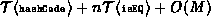 to
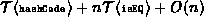,
where n is the number of items in the scatter table.
Determining the running time of Program
is a little tricky.
Assuming the item to be deleted is actually in the table,
the running time to find the position of that item (line 8) is
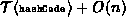,
where  is the number of item actually in the scatter table.
In the worst case,
the scatter table is comprised of a single cluster of n items,
and we are deleting the first item of the cluster.
In this case,
the main loop on lines 12-28 makes a pass through the entire cluster,
in the worst case moving the hole to the end of the cluster one position
at at time.
Thus, the running time of the main loop is 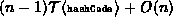.
The remaining lines require a constant amount of additional time.
Altogether, the running time for the withdraw method is
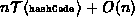 in the worst case.
is the number of item actually in the scatter table.
In the worst case,
the scatter table is comprised of a single cluster of n items,
and we are deleting the first item of the cluster.
In this case,
the main loop on lines 12-28 makes a pass through the entire cluster,
in the worst case moving the hole to the end of the cluster one position
at at time.
Thus, the running time of the main loop is 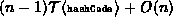.
The remaining lines require a constant amount of additional time.
Altogether, the running time for the withdraw method is
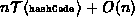 in the worst case.
 Copyright © 1998 by Bruno R. Preiss, P.Eng. All rights reserved.
Copyright © 1998 by Bruno R. Preiss, P.Eng. All rights reserved.